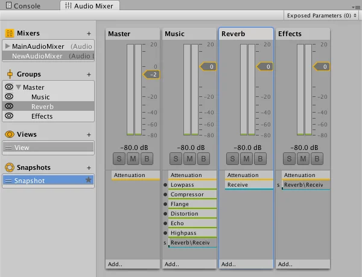

The window displays the Audio Mixer which is basically a tree of Audio Mixer Groups. An Audio Mixer group (bus) is a mix of audio signals processed through a signal chain which allows you to control volume attenuation and pitch correction. It allows you to insert effects that process the audio signal and change the parameters of the effects. There’s also a send and return mechanism to pass the results from one bus to another.

An Audio Mixer is an asset. You can create one or more Audio Mixers and have more than one active at any time. An Audio Mixer always contains a master group. Other groups can then be added to define the structure of the mixer.
Note: The Web platform only partially supports Audio Mixers. For more information on how audio is used in the Web platform, refer to Audio in Web.
You route the output of an Audio SourceA component which plays back an Audio Clip in the scene to an audio listener or through an audio mixer. More info
See in Glossary to a group within an Audio Mixer. The effects will then be applied to that signal.
The output of an Audio Mixer can be routed into any other group in any other Audio Mixer in a scene enabling you to chain up a number of Audio Mixers in a scene to produce complex routing, effect processing and snapshot applying.
You can capture the settings of all the parameters in a group as a snapshot. If you create a list of snapshots you can then transition between them in gameplay to create different moods or themes.
Ducking allows you to alter the effect of one group based on what is happening in another group. An example might be to reduce the background ambient noise while something else is happening.
The Views section allows you to enable and disable the visibility of certain groups within a mixer and set them as a view.
All groups are visible by default, but you can set up a view to only show the groups you want to edit at specific times. This can be useful to reduce clutter.
To set up a view:
When you switch between different views, the groups that are visible change depending on your setup.